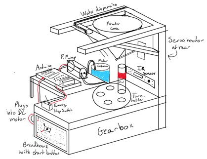
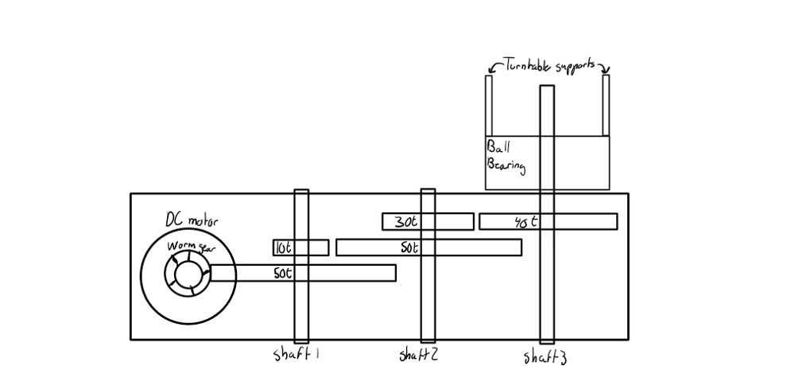
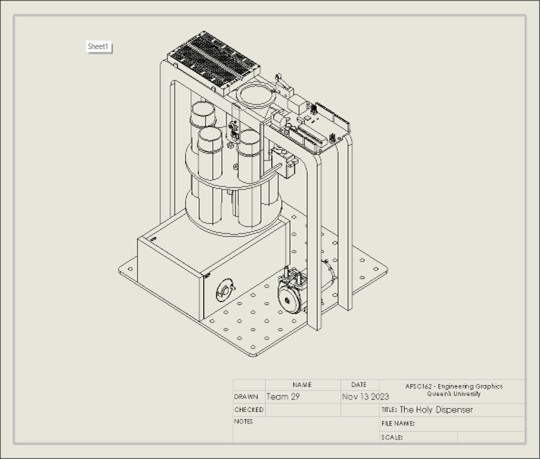

Automated Fluid Dispenser (AFD)
Hands-Free Medical Dispensing Prototype
Project Description
A prototype fluid dispenser for use in medical facilities with hands-free dispensing, using an IR sensor, pump, vials, turntable and a custom gearbox. An idea based on Vancouver's pilot project machine called MySafe.
Key Features
- Modelled & 3D printed the main structure of the gearbox with a 5-gear, 167:1 gear ratio
- High torque design for precise vial rotations and alignment with dispensing nozzle
- Integrated all dispenser components using a control loop on an Arduino Uno
- Hands-free operation through IR sensor detection
- C programming for embedded control system
Images

System schematic showing component integration

Side view of the custom 3D-printed gearbox

CAD drawing of the complete fluid dispenser assembly